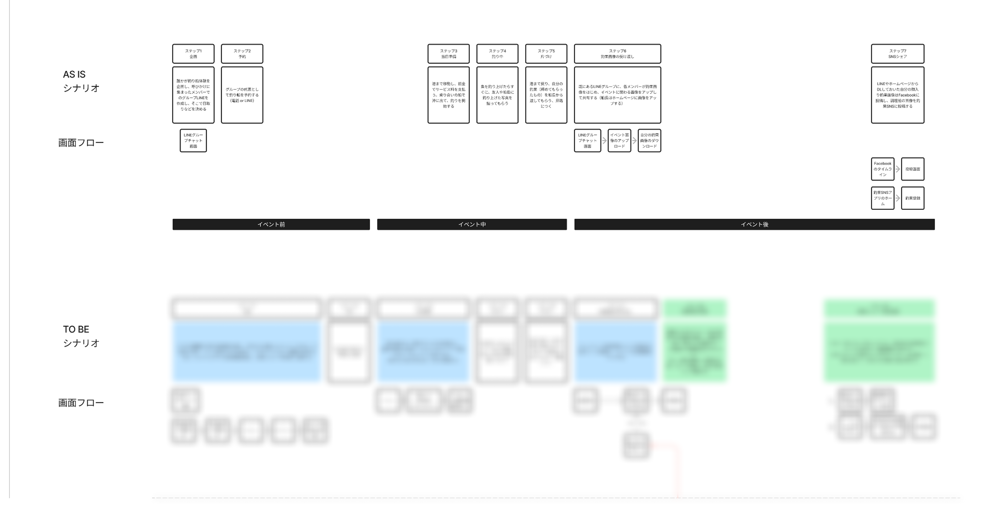

背景
デザイナーとして参画。クライアントは漁船向けセンサーのBtoBメーカーで、そのセンサーと連動した釣り人向けの釣果ログアプリを作ることで、センサーの販売拡大につなげたいという目的がありました。
ユーザーインタビューとシナリオ
要件整理 〜 ワイヤーと基本デザイン作成 〜 プロトタイプ作成という流れで進めました。
要件整理で最初に実施したのは、社内の釣り愛好家へのインタビューです。釣船での体験を聞き取り、AS ISシナリオとして書き起こしました。その後、クライアントの事前資料から想像を膨らませて、今回のアプリを絡めたTO BEシナリオを作り、クライアントとブラッシュアップしていきました。

シナリオでの気づき
釣果の写真は、ほぼ自分では撮らない
釣果と自分を並べて、仲間や船長に撮影してもらう。さらには、釣船には複数のグループが乗船していて、船長は全グループの釣果を撮影する可能性がある、とのこと。
このことから、グループ単位の共有アルバム、航行単位の共有アルバムという概念を提案しました。グループ単位のそれで仲間内で釣果写真を、航行単位のそれで船長が撮った釣果写真を共有することにしました。
学び
振り返ってみれば、対応期間を3分の2程度をシナリオを介したクライアントとの対話に当てていました。逆に言えば、クライアントとシナリオをしっかり擦り合わせたことで、Figmaでのデザインカンプやプロトタイプ作成にはそれほど時間を必要としませんでした。
「シナリオを大切に育てた」という自負があり、自分の中ではデザインカンプやプロトタイプよりも成果物としての価値が高く感じています。デザイナーの価値を発揮する場所は、一見、デザインカンプやプロトタイプと思われがちですが、今回のシナリオみたいに手前にもあるし、遜色なく重要なのではないだろうか、と感じました。